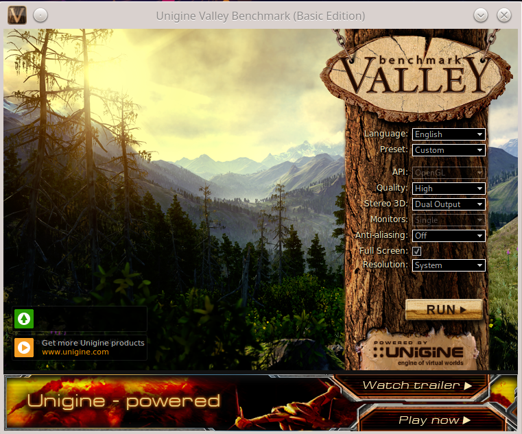

Linuxdell_videointellamd
Configurando o Linux para utilizar a placa de vídeo AMD Radeon e não Intel
Alguns notebooks vêm com duas placas de vídeo, tal como uma Intel e outra AMD/Radeon. Todavia, normalmente a placa de vídeo que o sistema utiliza é uma placa sem recursos de GPU e a outra placa de vídeo fica ociosa, mesmo tendo recursos (GPU) que possam ajudar no processamento de imagens. Assim, este post apresenta como alterar entre as placas de vídeo, principalmente colocando como placa de vídeo principal a placa que tem mais recursos.
Atenção: Colocar como principal, a placa de vídeo com mais recursos, pode consumir mais energia/bateria.
Configuração
Essa configuração foi feita no Manjaro Linux, que é derivante do Arch Linux. No caso do Manjaro os módulos das placas de vídeo já estão carregadas pelo Kernel. Aqui não abordarei como instalar o módulo/drivers das placas de vídeo, o foco é ativar/escolher entre as placas já configuradas.
Identificando as placas de vídeo:
Para identificar as placas de vídeo é possível utilizar o comando lspci:
$ lspci -k | grep -EA3 'VGA|Display|3D'
00:02.0 VGA compatible controller: Intel Corporation HD Graphics 5500 (rev 09)
Subsystem: Dell Device 0643
Kernel driver in use: i915
Kernel modules: i915
--
04:00.0 Display controller: Advanced Micro Devices, Inc. [AMD/ATI] Topaz XT [Radeon R7 M260/M265 / M340/M360 / M440/M445 / 530/535 / 620/625 Mobile]
Subsystem: Dell Radeon R7 M260/M265
Kernel driver in use: amdgpu
Kernel modules: amdgpu
Na saída anterior são apresentadas duas placas de vídeo:
- 1)
Intel Corporation HD Graphics 5500; - 2)
Advanced Micro Devices, Inc. [AMD/ATI] Topaz XT [Radeon R7 M260/M265 / M340/M360 / M440/M445 / 530/535 / 620/625 Mobile].
O comando anterior apresenta o nome da placa de vídeo e o módulo do Kernel que cada uma está utilizando. É possível constatar o carregamento desses módulos com os seguintes comandos - é claro que isso depende de cada caso/placa, no exemplo anterior os módulos são:
- 1)
Intel:
$ lsmod | grep -i i915
i915 2666496 4
i2c_algo_bit 16384 2 amdgpu,i915
drm_kms_helper 266240 2 amdgpu,i915
cec 73728 2 drm_kms_helper,i915
intel_gtt 24576 1 i915
drm 585728 16 gpu_sched,drm_kms_helper,amdgpu,i915,ttm
- 2)
AMD Radeon:
$ lsmod | grep -i amdgpu
amdgpu 6434816 29
gpu_sched 40960 1 amdgpu
ttm 122880 1 amdgpu
i2c_algo_bit 16384 2 amdgpu,i915
drm_kms_helper 266240 2 amdgpu,i915
drm 585728 16 gpu_sched,drm_kms_helper,amdgpu,i915,ttm
Note que tais módulos também já haviam sido apresentados pelo comando anterior (lspci -k).
Identificando a placa padrão utilizada no sistema:
O comando a seguir mostra qual placa que está sendo utilizada para apresentar/processar os gráficos:
$ glxinfo | grep "OpenGL renderer string"
OpenGL renderer string: Intel Corporation HD Graphics 5500
Neste exemplo a placa padrão é a Intel, que não possui grande processamento gráfico, quando comparada à AMD/Radeon. Então, neste exemplo trocaremos a placa padrão para a AMD/Radeon, para que os programas gráficos utilizem a GPU.
Alterando a placa de vídeo padrão:
Há algumas formas de fazer a alteração da placa de vídeo padrão. A ideia aqui é fazer com que o sistema sempre utilize a placa mais potente, mesmo que isso consuma mais bateria. Tal configuração deve persistir, ou seja, deve valer mesmo que o computador seja reinicializado.
Então para tal configuração, levando em consideração a placa de vídeo que estamos utilizando de exemplo, são necessárias as seguintes configurações:
- 1) Configurar corretamente o módulo do Kernel, editando e/ou criando o arquivo
/etc/modprobe.d/amdgpu.conf:
Isso pode ser feito com o seu editor de texto favorito, neste caso foi utilizado o vi:
vi /etc/modprobe.d/amdgpu.conf
Dentro do arquivo /etc/modprobe.d/amdgpu.conf inclua o seguinte conteúdo:
options amdgpu si_support=1
options amdgpu cik_support=1
- 2) Configurar (“setar”) qual placa de vídeo que vai ser utilizada. Para isso primeiro temos que ver o número que identifica a ordem de cada placa de vídeo no sistema. Isso pode ser feito com o comando:
$ xrandr --listproviders
Providers: number : 2
Provider 0: id: 0x46 cap: 0xb, Source Output, Sink Output, Sink Offload crtcs: 4 outputs: 3 associated providers: 1 name:Intel
Provider 1: id: 0xa9 cap: 0xd, Source Output, Source Offload, Sink Offload crtcs: 0 outputs: 0 associated providers: 1 name:AMD Radeon R7 M260 @ pci:0000:04:00.0
Neste caso a placa que queremos é a AMD\Radeon, que é identificada como provedor 1 (Provider 1).
Então, identificado isso é necessário editar o arquivo /etc/environment, adicionando/editando a variável DRI_PRIME. Exemplo:
$ vi /etc/environment
DRI_PRIME=1
No qual 1 é a identificação do provedor (Provider 1), identificado pelo comando xrandr.
-
3) Feito isso agora é só reiniciar o computador.
-
4) Depois que o computador reiniciar, é possível identificar qual é a placa de vídeo que agora está sendo utilizada como padrão. Neste exemplo se tudo funcionou deve aparecer a placa AMD/Radeon. Exemplo:
$ glxinfo | grep "OpenGL renderer string"
OpenGL renderer string: AMD Radeon R7 M260 (ICELAND, DRM 3.39.0, 5.9.16-1-MANJARO, LLVM 11.1.0)
A saída do comando anterior indica que agora a placa de vídeo padrão é a AMD/Radeon e não mais a Intel.
Mudando a placa de vídeo padrão em tempo de execução (sem reiniciar):
É possível mudar a placa de vídeo que está sendo utilizada no sistema com o comando xrandr, sem precisar reiniciar o sistema (sem reboot).
Então, como foi feito anteriormente, utiliza-se o comando xrandr --listproviders, para verificar o número do provedor. Exemplo:
$ xrandr --listproviders
Providers: number : 2
Provider 0: id: 0x46 cap: 0xb, Source Output, Sink Output, Sink Offload crtcs: 4 outputs: 3 associated providers: 1 name:Intel
Provider 1: id: 0xa9 cap: 0xd, Source Output, Source Offload, Sink Offload crtcs: 0 outputs: 0 associated providers: 1 name:AMD Radeon R7 M260 @ pci:0000:04:00.0
Após identificar tal provedor (qual placa utilizar), também utilizamos o comando xrandr, para configurar (“setar”) a placa que vai ser utilizada pelo computador. Exemplo:
$ xrandr --setprovideroffloadsink 1
ou
$ xrandr --setprovideroffloadsink 'AMD Radeon R7 M260 @ pci:0000:04:00.0'
Atenção: Nos comandos anteriores, a ideia foi utilizar a placa AMD/Radeon, mas seria possível também trocar da placa AMD/Radeon, que estaria como padrão, para a placa Intel. Por exemplo, isso seria feito utilizando o comando $ xrandr --setprovideroffloadsink 1 ou utilizando o nome da placa $ xrandr --setprovideroffloadsink Intel.
Observação, nos meus testes esse último método não funcionou (trocar a placa com
xrandr), o ambiente gráfico foi reiniciado e ficava apenas uma tela preta com o ponteiro do mouse, não saia disso. Mas vários sítios da Internet dão essa possibilidade e dizem que funciona.
Testando a placa de vídeo
Depois de configurar corretamente a placa de vídeo, no caso de escolher uma com GPU, é possível realizar alguns testes para verificar se realmente tal placa está utilizando os recursos disponíveis de forma adequada.
Benchmarks
Uma forma simples de testar é utilizando o aplicativo glxgears, que abrirá uma janela com algumas engrenagens girando. Tal como na imagem a seguir:
Um teste um pouco mais “complexo” pode ser utilizando um benckmark de terceiros, tal como o Valley, que pode ser baixado em https://benchmark.unigine.com/valley. Depois de baixar basta dar permissão de execução para o arquivo e executar. Então será extraído um diretório com o executável do benckmark, desta forma basta executá-lo. Veja os comandos a seguir:
$ chmod a+x Unigine_Valley-1.0.run
$ ./Unigine_Valley-1.0.run
$ cd Unigine_Valley-1.0
$ ./valley
Após executar o comando ./valley será aberta uma interface gráfica que permite a execução do benckmark/teste - tal interface é bem intuitiva:

No caso da minha placa de vídeo é possível acompanhar o uso das GPUs, memória, dentre outros, com o comando radeontop. Tal como mostra a imagem a seguir:
Conclusão
Bem, alterar entre as placas de vídeo no Linux dá trabalho mas é possível. No exemplo usado neste post o Linux foi configurado para usar a placa de vídeo com mais recursos e não a placa padrão.